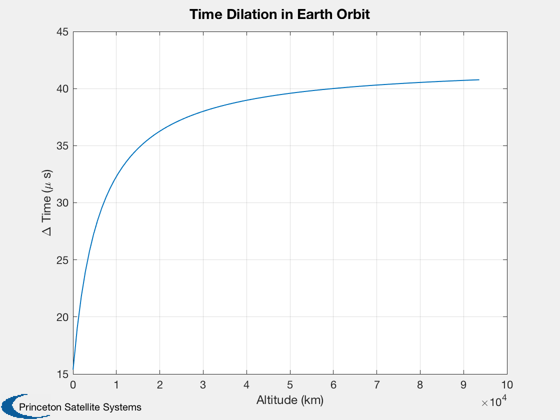

GPS time dilation.
GPS clocks tick more slowly due to special relativity, 7.2 microseconds
per day. They tick more quickly due to general relativity about 45.9
microseconds per day.
------------------------------------------------------------------------
Reference: http://en.wikipedia.org/wiki/Global_Positioning_System
------------------------------------------------------------------------
See also Plot2D, GravitationalTimeDilation, VelocityTimeDilation
------------------------------------------------------------------------
Contents
mu = 3.98600436e5;
r = 42167/2;
rE = 6378.165;
tDay = 86400*1e6;
Time ratio relative to infinity
tGS = GravitationalTimeDilation( mu, r );
tGE = GravitationalTimeDilation( mu, rE );
vE = rE*2*pi/86400;
vS = sqrt(mu/r);
v = vS - vE;
tV = VelocityTimeDilation( v );
dT = (tV-1)*tDay;
fprintf('Time change on GPS satellite due to special relativity is %8.1f microseconds\n',dT)
tGround = (tGE - 1)*tDay;
tGPS = (tGS - 1)*tDay;
dT = tGPS - tGround;
fprintf('Time change on GPS satellite due to general relativity is %8.1f microseconds\n',dT)
Time change on GPS satellite due to special relativity is -7.3 microseconds
Time change on GPS satellite due to general relativity is 41.9 microseconds
Compute for a range of orbits
r = linspace(6400,100000);
v = sqrt(mu./r);
tV = VelocityTimeDilation( v-vE );
dTS = (tV-1)*tDay;
tGS = GravitationalTimeDilation( mu, r );
tGS = (tGS - 1)*tDay;
dTG = tGPS - tGround;
Plot2D( r-rE, dTG + dTS, 'Altitude (km)', '\Delta Time (\mu s)','Time Dilation in Earth Orbit')
